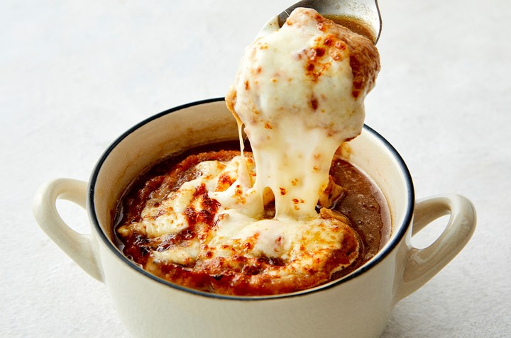

Ingredients
- Main Ingredients: 2 Medium onions, 2-3 tablespoons Butter, 2-3 cups Water, 100g Mozzarella cheese
- Seasoning: 1-2 Chicken stock cubes, Pinch of Salt, Pinch of White pepper
Steps
- Peel and thinly slice the onions.
- In a non-stick pan, melt butter over high heat and sauté the onions for 5 minutes until softened.
- Reduce the heat to low and caramelize the onions, stirring occasionally, for about 30 minutes until they turn deep brown.
- Add chicken stock cubes and water, and bring to a boil. Season with salt and white pepper to taste.
- Pour the soup into bowls and top with toasted baguette slices (or whole-grain bread). Sprinkle mozzarella cheese generously on top.
- Bake in a preheated oven at 200°C until the cheese melts, or microwave for 1-2 minutes. Serve hot and enjoy!